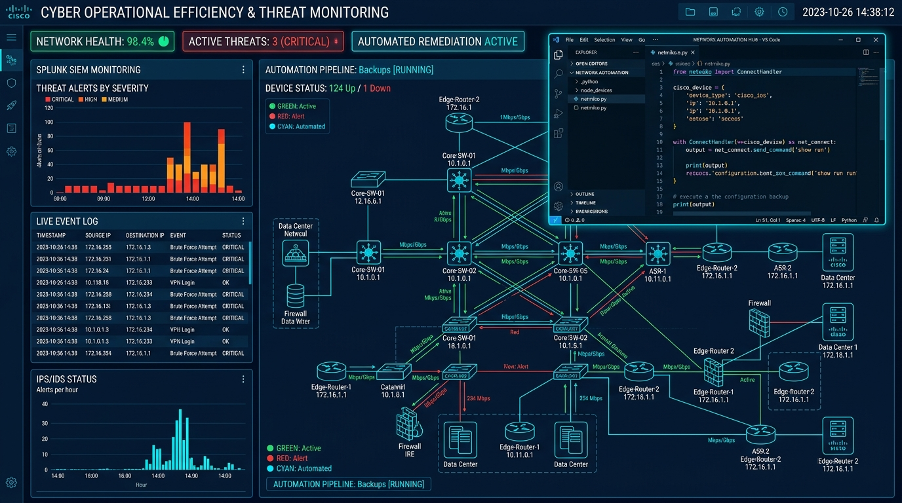
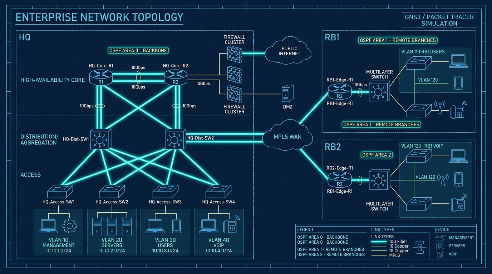
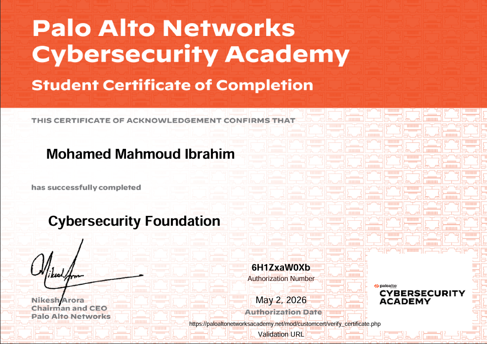
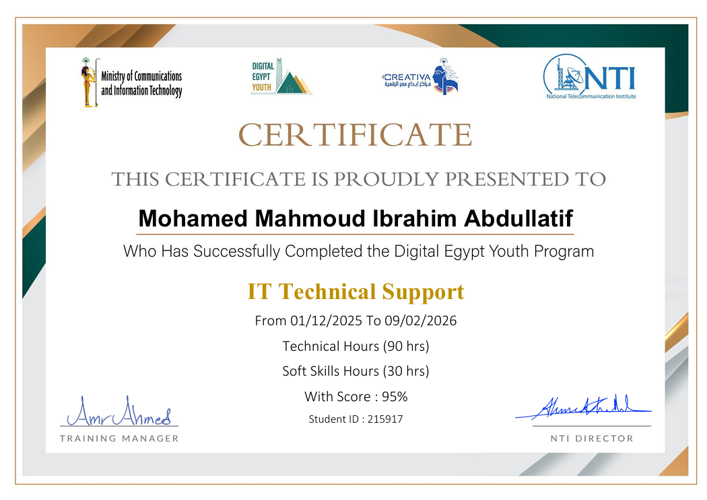
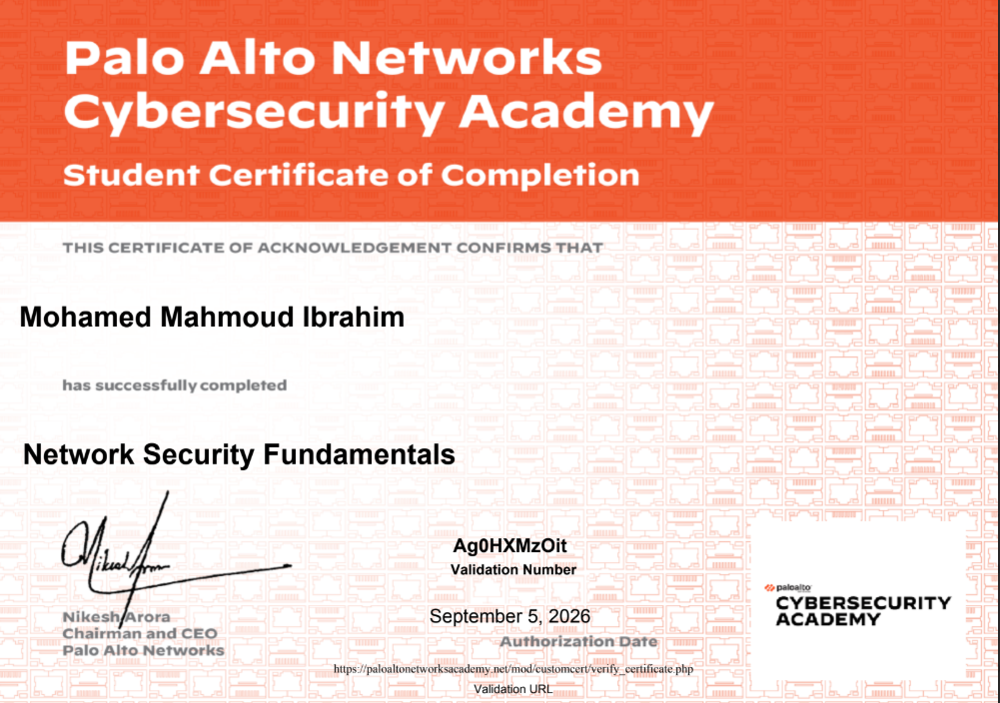
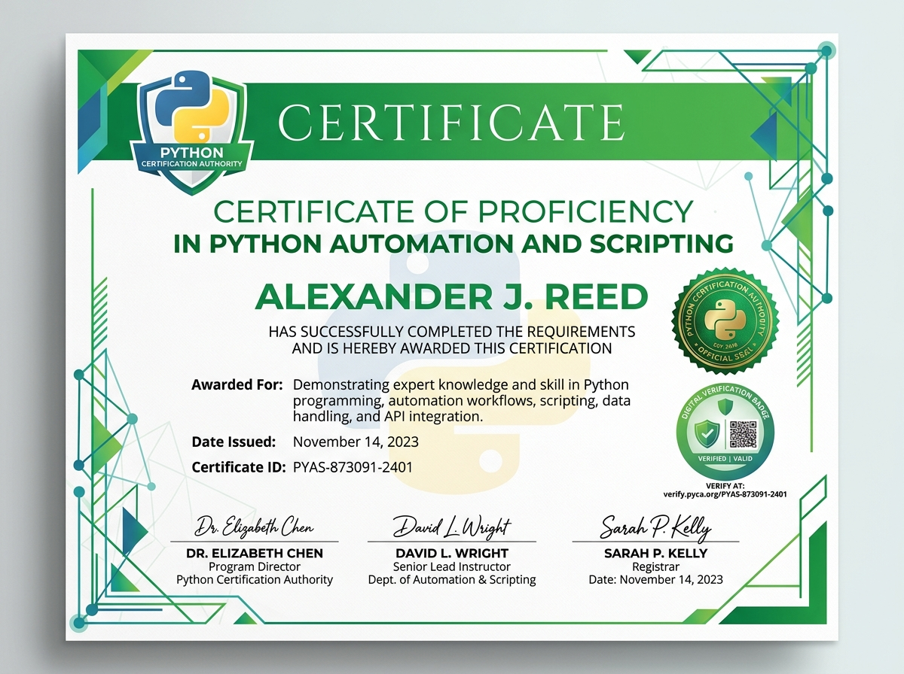
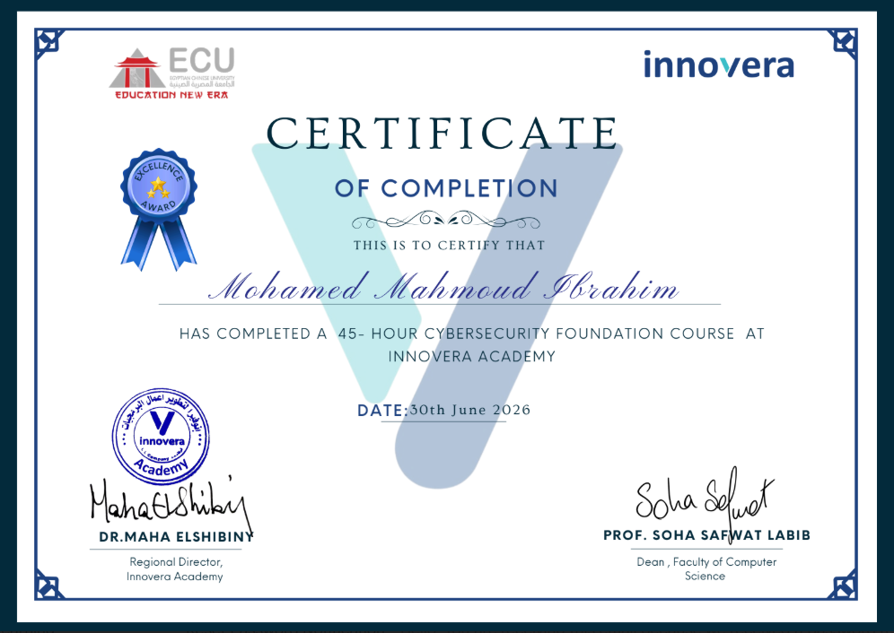

Hi, I'm
Mohamed Mahmoud Ibrahim
Entry-level SOC Analyst and IT Support Specialist with CCNA & CCST certifications and hands-on experience in networking, cybersecurity, and infrastructure support.
About
Entry-level SOC Analyst (L1) and IT Support Specialist with 420+ hours of hands-on training in security monitoring, log analysis, alert triage, and incident response across 15+ practical labs, alongside a solid foundation in network administration and enterprise infrastructure. Trained on SIEM platforms (Splunk, IBM QRadar, FortiSIEM, Security Onion) and SOAR playbooks (FortiSOAR) to detect, investigate, and escalate security events, and skilled in threat and vulnerability assessment, network traffic analysis (Wireshark), and firewall/IDS-IPS monitoring (FortiGate). Combines this security foundation with practical experience supporting Windows, Active Directory, and Cisco network environments to deliver reliable first-line detection, troubleshooting, and support.
SOC Analyst (L1) | Network & IT Support Specialist
Proactive security and infrastructure professional with extensive lab experience across SIEM monitoring, threat detection, and Cisco network environments.
- Phone: +20 01068487084
- City: Minya, Egypt
- Email: mah902110@gmail.com
- Degree: Bachelor of Technology (IT – Network Specialization)
- University: Fayoum International Technology University (FITU)
- GPA: 3.8 / 4.0
- Certifications: Cisco Certified Support Technician (CCST); CCNA
- Freelance: Available
Equipped with strong analytical and incident triage capabilities. Experienced in analyzing PCAP network traffic with Wireshark, configuring FortiGate firewalls & IDS/IPS, implementing Cisco routing/switching, managing Windows Server & Active Directory, and building automated security scripts in Python.
Training Hours SOC & Cybersecurity
Practical Labs SIEM & Pentesting
Certifications & Courses CCST, CCNA, Palo Alto, ITI
Professional Programs NTI, DEY, CAPMAS, Alx
Tools & Technologies
The cybersecurity, SIEM, networking, and systems administration tools I use to monitor, protect, and troubleshoot enterprise environments.
Skills
Technical competencies across SOC operations, network infrastructure, and programming. Built through 420+ hours of intensive hands-on lab training.
SOC & Security Operations
Network & IT Infrastructure
Programming & Scripting
Resume
Comprehensive background in Security Operations, Network Engineering, and IT Support. Specialized in SIEM monitoring, threat analysis, and Cisco infrastructure.
Download CVSummary
Mohamed Mahmoud Ibrahim
Entry-level SOC Analyst (L1) and IT Support Specialist with 420+ hours of hands-on training in security monitoring, log analysis, alert triage, and incident response across 15+ practical labs, alongside a solid foundation in network administration and enterprise infrastructure. Trained on SIEM platforms (Splunk, IBM QRadar, FortiSIEM, Security Onion) and SOAR playbooks (FortiSOAR) to detect, investigate, and escalate security events, and skilled in threat and vulnerability assessment, network traffic analysis (Wireshark), and firewall/IDS-IPS monitoring (FortiGate). Combines this security foundation with practical experience supporting Windows, Active Directory, and Cisco network environments to deliver reliable first-line detection, troubleshooting, and support.
- Minya, Egypt
- +20 01068487084
- mah902110@gmail.com
Education
Bachelor of Technology – Network Specialization
2022 – 2026
Fayoum International Technology University (FITU)
GPA 3.8 / 4.0. Focus: Networking, Cybersecurity fundamentals, Routing & Switching, Network Security.
Certifications & Licenses
Cisco Certified Support Technician (CCST) Networking
Professional License (May 2026 – 2031)
Professional License • Issued May 2026 • Valid until May 2031
CCNA: Cisco Networking Academy Tracks
Introduction to Networks • Switching, Routing, & Wireless • Enterprise Networking, Security & Automation
Cybersecurity Foundation
Palo Alto Networks Cybersecurity Academy • May 2026
AI-Driven Security (Sentinel Agent)
GDG on Campus Future Academy • May 2026
Experience & Training
Cybersecurity & SOC Analyst (L1) Trainee
July 2026 – December 2026
National Telecommunication Institute (NTI), Cairo
- Completed 420+ hours of hands-on cybersecurity/SOC training across 15+ practical labs (SIEM monitoring, incident response, penetration testing).
- Monitored alerts and analyzed logs in Splunk, IBM QRadar, FortiSIEM, and Security Onion to detect anomalies and identify IOCs.
- Investigated/escalated incidents using FortiSOAR playbooks and FortiAnalyzer following structured SOC workflows.
- Performed vulnerability scanning, network/port scanning, and penetration testing (recon, web app, wireless).
- Analyzed traffic with Wireshark; monitored FortiGate firewalls, IDS/IPS, IPsec/SSL VPNs, and web filtering.
- Applied Cisco CyberOps and Red Hat Linux administration to secure endpoints; completed a business English/leadership/project-management track with a capstone project.
IT Technical Support Trainee
December 2025 – February 2026
Digital Egypt Youth (DEY) – Creativa Innovation Hubs, Minya
- Provided Tier 1 technical support, triaging hardware/software/network tickets to maintain system uptime.
- Administered Windows & Active Directory (user accounts, permissions, access controls).
- Logged, tracked, and escalated incidents through a structured documentation process.
- Monitored endpoint/network health to proactively flag and resolve issues.
CCNA Trainee
October 2025 – November 2025
CAPMAS HRDC, Cairo
- Completed enterprise network infrastructure training in advanced routing and network security.
- Configured VLANs, NAT, and ACLs for traffic segmentation and access control.
- Deployed OSPF and EIGRP for scalable multi-branch connectivity.
- Simulated and stress-tested complex architectures in Cisco Packet Tracer.
Network Infrastructure Trainee
July 2025 – August 2025
National Telecommunication Institute (NTI), Cairo
- Studied core routing, switching, and IP subnetting design.
- Configured Cisco routers/switches for secure, monitorable connectivity.
- Diagnosed connectivity issues using structured CCNA testing strategies.
- Evaluated LAN/WAN frameworks for security and performance.
Projects
Practical engineering and security implementations in Python network automation, SIEM integration, and embedded systems.
- All
- Networking & Security
- Embedded Systems

Graduation Project — Network Automation & Secure Program with Python
A comprehensive Python-based automation solution (2,000+ lines of code) to automate Cisco network deployment and configuration. Automated Layer 2/3 topologies using Netmiko across multi-branch EVE-NG environments, automated branch firewalls and ACLs for traffic filtering, and integrated a Splunk-based SIEM solution for continuous threat monitoring and anomaly detection.
{kind=link}

Enterprise Multi-Branch Network Design & OSPF/VLANs
Hierarchical Core-Distribution-Access enterprise network architecture designed for high availability and fault tolerance. Implemented multi-area OSPF routing, Inter-VLAN routing with 802.1Q trunking, HSRP first-hop gateway redundancy, and NAT/PAT. Enforced comprehensive network hardening using Port Security, DHCP Snooping, Dynamic ARP Inspection, and ACL security policies.
{kind=link}
Next-Gen Firewall & SOC Threat Mitigation Lab
Comprehensive enterprise perimeter security deployment featuring FortiGate Next-Generation Firewall integrated with Splunk SIEM. Configured IPS/IDS threat inspection signatures, SSL-VPN secure remote tunnels, and web/application filtering. Streamed real-time syslog alerts into Splunk and IBM QRadar for incident triage, analyzing brute-force, port scans, and malware activity.
{kind=link}
{kind=link}
Services
End-to-end security operations, threat triage, network infrastructure, and enterprise IT support aligned with industry standards.
SOC Monitoring & Log Analysis
Alert triage, log analysis, and anomaly detection using enterprise SIEM platforms (Splunk, IBM QRadar, FortiSIEM, Security Onion) to identify Indicators of Compromise (IOCs).
Incident Response & Reporting
Investigating, containing, and escalating security incidents using structured IR workflows, SOAR playbooks (FortiSOAR), and comprehensive forensic documentation.
Network Traffic & Firewall Monitoring
Deep packet inspection and traffic analysis with Wireshark, combined with FortiGate firewall, IDS/IPS, VPN, and security policy administration.
Vulnerability Assessment
Systematic vulnerability scanning, network/port discovery, and penetration testing fundamentals across network, web application, and wireless attack surfaces.
Network Design & Implementation
Enterprise network design, VLAN segmentation, NAT, ACLs, and dynamic routing (OSPF, EIGRP) utilizing Cisco routers and switches for high-performance LAN/WANs.
Windows Server & Active Directory
Enterprise user administration, Group Policy Objects (GPOs), permissions management, domain services, and Tier 1/2 technical support for seamless operations.
Certificate Gallery
Professional certifications and achievements demonstrating expertise in cybersecurity, networking, and IT infrastructure.

{kind=link}
Cybersecurity Foundation
Palo Alto Networks{kind=link}
Network Infrastructure
NTI
{kind=link}
IT Technical Support
NTI
{kind=link}
Network Security
Palo Alto Networks
{kind=link}
Python Automation
Python Academy
{kind=link}
Cybersecurity Foundation
Innovera AcademyKey Features
Contact
Feel free to reach out for security monitoring, network engineering, IT support inquiries, or freelance opportunities.
Address
Minya, Egypt
Phone
+20 01068487084
mah902110@gmail.com